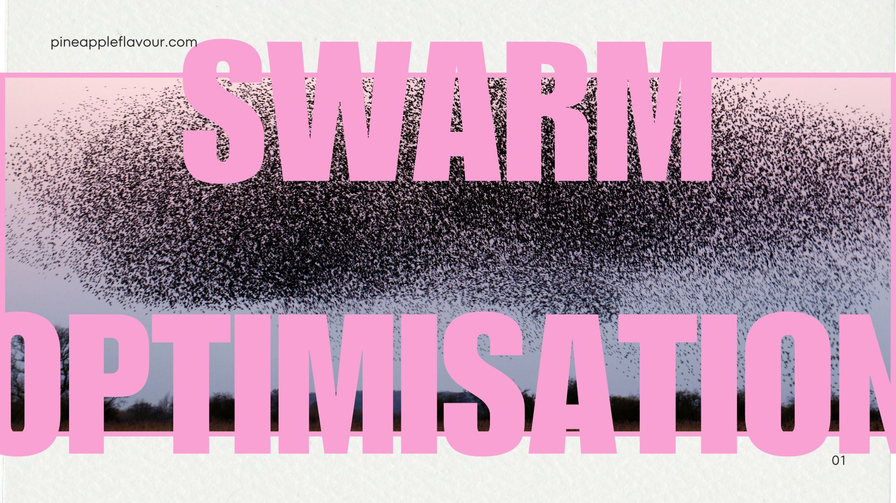

Particle Swarm
Optimiser
Client
Spectral
Date
October 2024
For
Artificial Intelligence
Split Signal was developed for an online feature by Spectral Press, a digital-first news platform reporting on identity, technology, and society. The article—titled "The Fractured Self"—explored how social media filters, surveillance culture, and algorithmic profiling reshape the way individuals present themselves online. Our goal was to create a set of commissioned visuals that echoed this conceptual split across personal identity and public performance.

01 / CONCEPTUAL DIRECTION
We produced a series of abstract imagery that intentionally used a grainy texture and warped shapes to simulate a feeling of fragmented presence. Both contrast and saturation were adjusted to look slightly artificial—yet enticing, just like our digital personas—evoking the tension between the physical and the pixelated.
02 / SYMBOLIC VISUALS
Working closely with the editorial team, we developed a symbolic language of rings and gradients to represent the constant friction between acting and observing. Shapes overlap, move, and blurred to imitate the experience of digital overlays and near-realtime feedback. This allowed for a visual rhythm that matched the article’s narrative flow—where visual overload mirrors cognitive dissonance.